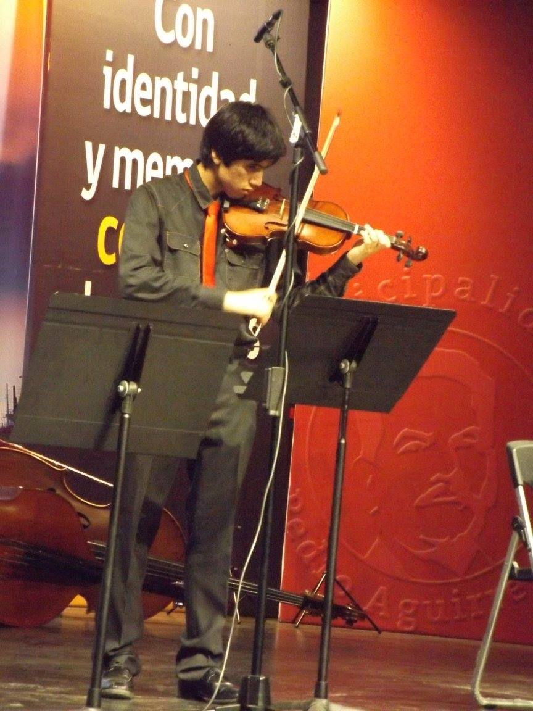

quiere ser streamer, nunca stremea
Gonzalo Nicolás Fuentes Alarcón
carrera: ingeniería en informática
edad: 18.5 (24)
encargado de realizar el login y "creó" un componente, ademas del home. jugaba lol mientras sus compañeros terminaban la app
volver